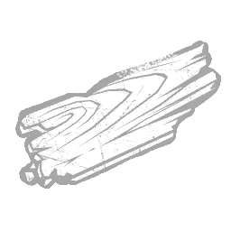
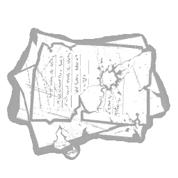
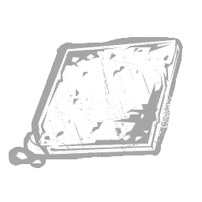

Campbell Kramer, 2024
|  |
Wooden Plank Increases the charges added to the Nightfall meter for hooking survivors by +25% |
|  |
Burnt Letters Increases the charges added to the Nightfall meter for injuring survivors by +25% |
|  |
Fallen Shingle increases the charge rate of the Nightfall meter while teleporting to lockers or while remaining inside lockers by +15% per second |
|
Malthinker's Skull Increases the charge rate of the Nightfall meter while survivors are injured by +25% per second |